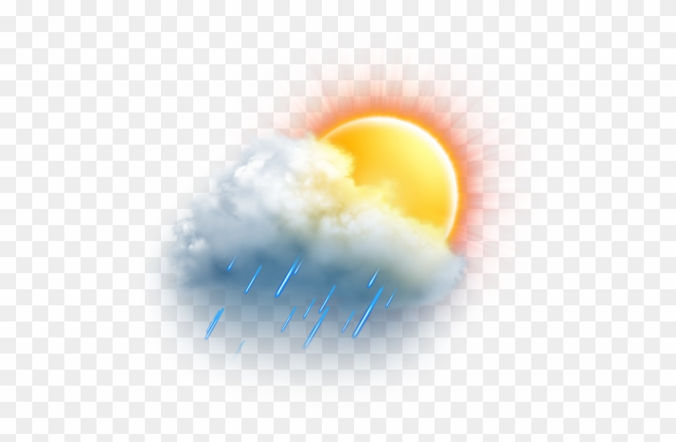
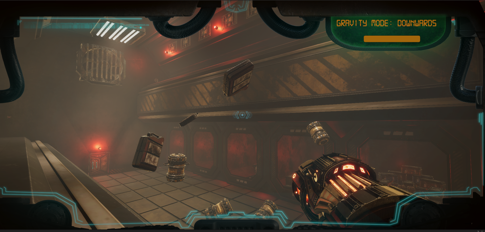
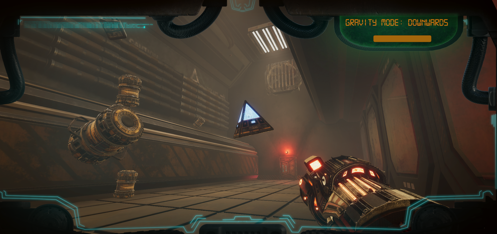
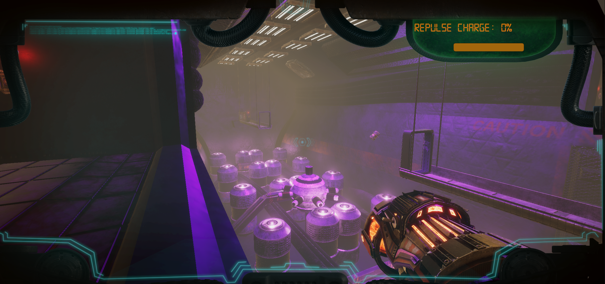

I recently remembered I had this website to update with projects, as one of my buddies sent my linked to a recruiter. Thanks! Anyways, I've recently been designing my own customer game engine for smaller projects, as the large file sizes produced by Unity or Unreal are usually pretty offputting to me and my optimization based OCD. I'm making 90% of the base framework in C++ myself using SDL2 with OpenGL as the rendering framework. Feel free to check the progress in my github repo at https://github.com/jacobharmon43/JHEngine. I'd spend longer adding a picture and a proper link to this post, but I don't feel like it. Oh also, I deleted some of the more underwhelming projects from the site. They were mostly filler to make the site fatter, but I'm more of a quality over quantity kinda guy now. (1:21 AM, 4/11/22).

Many people take for granted having advanced knowledge of the weather for the upcoming days, not knowing how challenging the process of predicting it can be. I set out on this project in hopes of understanding to some capacity that process and what goes into it using machine learning. The process I underwent had three major steps: Data Collection, Data Analysis, Regression Analysis.
Data Collection
A broad search for a large collection of local weather data for the city of Rolla left me empty handed, so I was forced to collect it myself. Not having 10 years to finish this project, I had to resort to scraping it from a collection that was not readily-available for public download. The simple process of scraping becomes much less simple when you factor in live webpages. The very first step I had to undergo in scraping was setting up a dummy browser, which allows me to interact with live webpages as a person would, but using code. Once I had set up the code to input a data and submit the form, I was then able to begin reading html elements to grab up all the data I needed to analyze for the project. Scraping source code found below:
Data Analysis and Regression
After having ascertained the data, my next step was to analyze it in order to reduce the number of dimensions in my regression analysis. Upon testing the correlation between the variables and the output, along with testing the single variable regression analysis, I discovered that most of the variables were equally valuable, or invaluable, on their own. This meant that only a combination of these factors could result in an accurate prediction. After not being able to easily eliminate any variables, I ran the full linear regression. Due to the unfortunately small data set, and the metric of which I was predicting, my outputs were relatively inaccurate. Predicting the rainfall for a 24 hour period proved too much for my small data set to do, and due to my data only being applicable to 24 hour periods, I was unable to increase my outputs precision any further than 24 hours, and such an average inaccuracy of 6mm / day of precipiation is what I settled on.
Full dataset and in-depth presentation of my findings are found below:
Weather data PDF of project description docResults of project: I learned a lot more than I'd ever want to about weather and refined my knowledge in the process of machine learning problems and data science as a whole. I was also able to understand the downfalls of my predictions and now have the knowledge to avoid those pits in the future machine learning projects I will undertake.



I was inspired to make a physics puzzle game by my love for physics and the ability to throw things around in weightlessness. The core mechanics for gravity I thought up were that you could manipulate the gravity of objects, and then you could move objects around freely in space, with the ability to fling them, or carefully place them in weightlessness. This exploded into something much more with the help of my friend Emmett with the visuals, and has yet to be finished but the project contains a few major classes:
A Player class consisting of: Gravity Tool Controller, Player Camera Controls, Player Movement Controls, Player Input Reader, Generic Health Class
A Interactible Materials consisting of: Physics Simulator, Generic Health Class (if destructible material), Destructible behavior
A lot of the games design draws heavily from what I learned in my physics one course, so kinematics, and hopefully soon to come, springs! It was and still is a blast to develop, and I am looking forward to continually update this page and the game as I go along. Only the player movement, tool, and camera source code will appear below, inquire through email if you want further source code material for miscellaneous things like a button interface I made, or the physics of the materials ect.
Results of project: Massively fun, engaging project that taught me so much about C#, Unity, OOP, Teamwork, Asset Management and so much more. Not done yet, so no real further results to share (Last Updated 9/25/2021)

Zipf's Law of Distribution governs an ordered set of pairs, (Element, Count of Appearances). The law states that the number of times an element appears is inversely proportional to its rank in the set multiplied by the number of appearances of the first element, so the first element appears (1/1 * (Element1AppearanceCount)). The second element appears half as many times as the first, the third element appears a third as many as the first, and so on so forth. The generalized formula for the number of times an object appears on a set X is as follows:
X = {a,b | a is the elements rank, b is the number of appearances, b = 1/a * X(1)}.
Results of project: I ran the code above with N = 500, therefore it counted number of times each word appeared in 500 different articles and totaled them up in a dictionary. The data in this dictionary can be seen in the chart above. While this may resemble Zipf's distribution a bit, as it decreases in a negative logarithmic fashion, I wanted to know just how close it was to being exactly Zipf's distribution. So I took each element in the top 10, and calculated its fractional comparision to the count of the first element, and then compared that value to its inverse rank. I took the average of all these errors to determine that the average error in this list was only 14%, meaning that every value was approximately 14% away from its expected Zipf appearance rate. This shows that while not proven, Zipf's Law of Distribution is definitely correct, as uncanny of a law as it may seem.

This was a database project I constructed that was meant to mimic that of how an ECommerce site would work. I handled a Username and Password service, although they were not hashed or anything on that level. I also handled that of keeping track of stock, user orders, and other behind the scenes stuff most ECommerce sites handle. To achieve all of this I created a flask web-app connected to a html site, this flask app then spoke with the mySQL database I had set up in the background. The code isn't sourced below as when my harddrive died, all the code I wrote for this died with it. Some bit of code and other database documentation can be seen on the below document however. Last Updated (9/15/21).
PDF of project description docResults of project: A almost functional, albeit rudimentary ECommerce app connected to a mySQL database. I learned a lot about SQL, Flask, and how to connect applications to background programs through this project.
Results of project: This websites source code can be just viewed through inspect element, if you interested in how I set it up. I learned a lot about HTML, CSS, PHP, and Javascript through this project. While I have also learned that web development tools are very useful, coding this entire site by hand was definitely worth the painstaking effort, as I learned many useful skills like how to make sure its functional on multiple screen sizes and platforms, and how to really expand the functionality of a singular web page, as github pages doesn't allow you to actually have more than one page. Last Updated (9/19/2021).
Programming Languages
C/C++ -4 years experience
C# -3 years experience
Python -2 years experience
Java -1 years experience
SQL -1 year experience
Javascript -1 years experience
HTML/CSS/PHP -1 years experience
Frameworks
Unity Engine -3 years experience
Unreal Engine -3 years experience
Node.js -1 years experience
Flask -1 years experience
mySQL -1 year experience
Skill Sets
OOP -4 years experience
Client / Server Architecture -2 years experience
Database Creation/Management -1 year experience
Machine Learning -1 year experience
Data Scraping -1 year experience
I am a senior dual majoring in Computer Science and Mathematics. I am looking for a chance to get experience working in the field of Computer Science order to cultivate my skills and demonstrate my willingness and capability to learn. I have many skills in mathematical and statistics oriented programming, such as data science or machine learning. I am also well versed in database construction and query optimization through my two database classes I have taken here at Missouri S&T. I am the Vice President of the Mathematical Association of America, and a member at large of the Association for Computing Machinery.

I am interested in software design, whether that be a tool for engineers or pilots to use to make their jobs easier, or whether it be a video game to entertain thousands of people. I find satisfaction in finishing a product that not only satisfies me, but will be satisfying to those who see or use it. I am also currently very interested in web development, as my databases class and this portfolio project have led me down a track of creating numerous web applications and web pages. I am also interested in statistical analysis, or data science, as I find some projects to have very interesting results that I strive to see myself, and show and explain to those around me, for example, the Zipf experiment I did on my portfolio page.